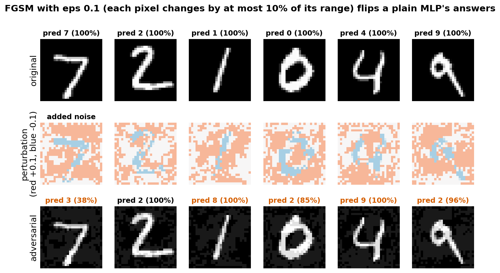
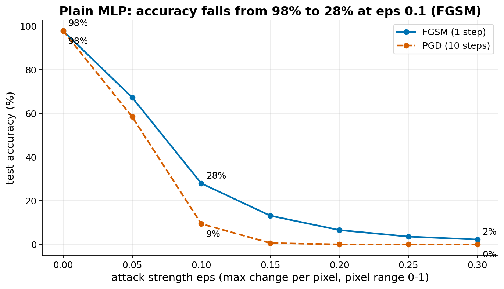
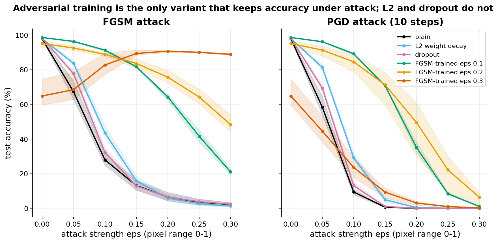
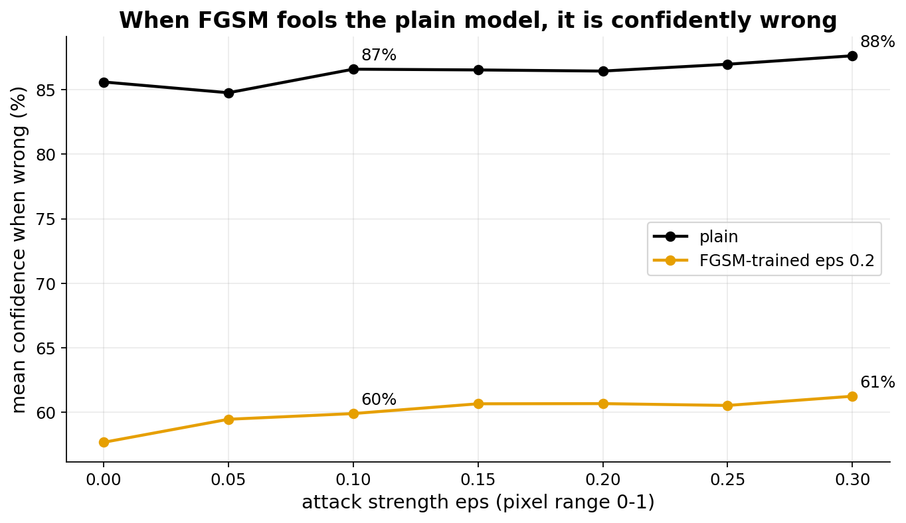

Adversarial examples
The idea
An adversarial example is an input that a person sees as unchanged, but that a trained network classifies wrongly. Szegedy et al. found this in 2013 for image classifiers. The change is not random noise. It is computed from the network itself.
The fast gradient sign method (FGSM) of Goodfellow et al. computes it in one step. Take the gradient of the loss with respect to the input pixels (not the weights). Look only at the sign of each entry: plus or minus. Move every pixel by eps in the direction that raises the loss, then clip to the valid range 0 to 1: x_adv = clip(x + eps * sign(grad_x loss), 0, 1). Here eps is the largest change allowed per pixel; with pixels in 0-1, eps 0.1 means at most 10% of the range.
Why it works, the "linear explanation" of Goodfellow et al. (2015): to first order, the loss changes by the gradient times the input change. One pixel changes by only eps, but an MNIST image has 784 pixels, and every one is pushed in the direction that helps the attacker. The small changes add up across all pixels into a large change in the network output. The sign of the gradient is the largest first-order step allowed when each pixel may move by at most eps.
Adversarial training means attacking each training batch and training on the attacked images. It is covered in Goodfellow, Bengio and Courville, Deep Learning, section 7.13, as a regularizer: it asks the network to give the same answer in a small region around each training point. PGD (projected gradient descent, Madry et al.) is a stronger attack: several small FGSM steps, each time projecting back so no pixel is further than eps from the original.
That adversarial examples exist, and that adversarial training makes a model more robust, are well established. Why they exist is still debated: the linear explanation is one view; another is that networks use predictive but non-robust features of the data (Ilyas et al. 2019). We do not need to settle this in the lab.
- Szegedy et al., Intriguing properties of neural networks (arXiv 1312.6199)
- Goodfellow, Shlens, Szegedy, Explaining and harnessing adversarial examples (arXiv 1412.6572)
- Madry et al., Towards deep learning models resistant to adversarial attacks (arXiv 1706.06083)
- Kurakin, Goodfellow, Bengio, Adversarial machine learning at scale (arXiv 1611.01236): "label leaking"
- Wong, Rice, Kolter, Fast is better than free: revisiting adversarial training (arXiv 2001.03994): "catastrophic overfitting"
What students would do
- Train the small MLP (about 20 s) and check the clean accuracy (about 98%).
- Write FGSM in a few lines with
torch.autograd.gradon the input. Plot original digit, perturbation, adversarial digit, with predicted labels and confidences. - Measure accuracy for eps 0 to 0.3 and plot the curve. Try to see the perturbation at eps 0.1.
- Write a function that trains on FGSM-attacked batches (the one extra line). Retrain and compare curves.
- Class experiment: each student gets one variant (plain, L2 weight decay, dropout, FGSM training at eps_train 0.1, 0.2 or 0.3) and one seed, runs it, and sends two curves (FGSM and PGD accuracy against eps). The server draws one curve per variant, with the spread over students as a band.
The knob each student changes is the training variant (and eps_train for adversarial training). The live plot should show two clusters: plain, L2 and dropout fall together, adversarially trained models stay high.
Questions for the discussion:
- Why do L2 weight decay and dropout not help, although they are regularizers? What does adversarial training add that they do not?
- What does the clean accuracy cost for adversarial training? Is it worth it?
- Why does the eps 0.3 model score higher under FGSM than on clean images? What does that say about trusting one attack?
- Is a model robust at eps 0.1 also robust at eps 0.2?
What our prototype found
Setup: MLP 784-512-512-10, 8 epochs, Adam, full MNIST, evaluated on all 10 000 test images, 3 seeds per variant. All numbers are means over the 3 seeds.




| Variant | Clean | FGSM eps 0.1 | FGSM eps 0.2 | PGD eps 0.1 | PGD eps 0.2 |
|---|---|---|---|---|---|
| plain | 97.9 | 28.0 | 6.6 | 9.4 | 0.0 |
| L2 (1e-4) | 97.9 | 43.6 | 5.9 | 29.2 | 0.5 |
| dropout 0.3 | 98.3 | 32.4 | 6.5 | 13.1 | 0.1 |
| FGSM-trained eps 0.1 | 98.6 | 91.3 | 64.4 | 89.2 | 35.1 |
| FGSM-trained eps 0.2 | 95.1 | 88.9 | 75.7 | 84.5 | 49.5 |
| FGSM-trained eps 0.3 | 64.8 | 82.7 | 90.7 | 23.6 | 3.1 |
Test accuracy in %, mean of 3 seeds.
Reading the table. PGD accuracy is never higher than FGSM accuracy, as it should be. At eps 0.1, PGD and FGSM agree well for both adversarially trained models (89.2% against 91.3%, and 84.5% against 88.9%), so most of that robustness is real, not an artefact of the weak attack. At eps 0.2 they do not: the eps 0.2 model keeps 75.7% under FGSM but only 49.5% under PGD, so part of its FGSM robustness is specific to the one-step attack. Beyond the training eps robustness fades quickly (eps 0.1 model at eps 0.2: 64% FGSM, 35% PGD). The eps 0.3 model shows catastrophic overfitting, a known failure of single-step adversarial training (Wong et al. 2020): it learns to defeat the one-step attack only, and PGD brings it to 0.3% at eps 0.3. It also scores higher under FGSM (88.9% at eps 0.3) than on clean images (64.8%). This is label leaking (Kurakin et al. 2016): FGSM uses the true label to build the perturbation, so the perturbation carries information about the label, and the model learns to read it. Both effects happened in all 3 seeds (clean accuracy 59.6% to 74.6%). Seed spread is noticeable for the eps 0.2 model (clean 92.9% to 96.6%).